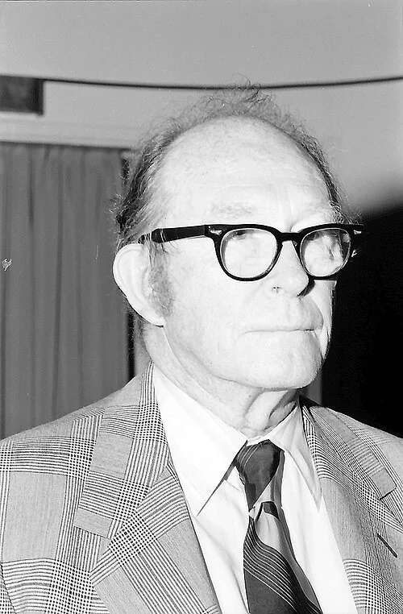
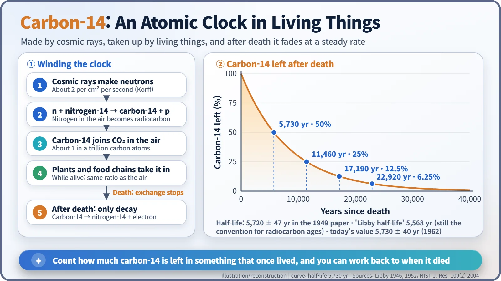
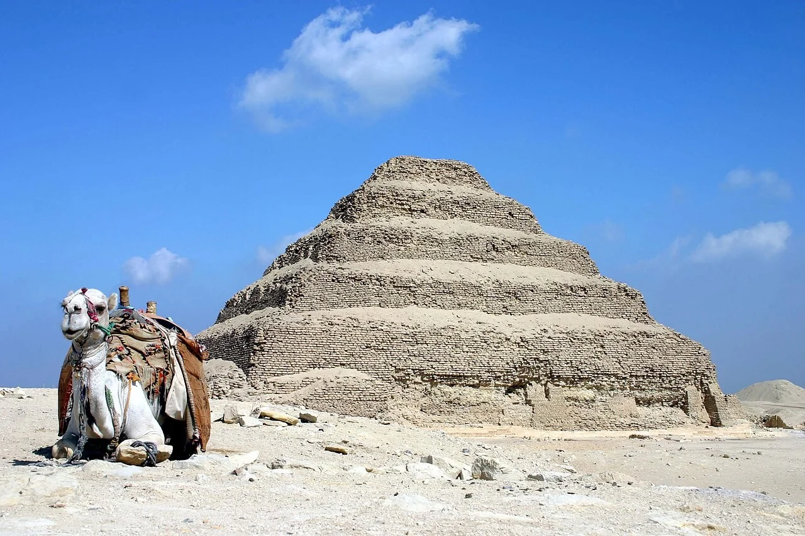
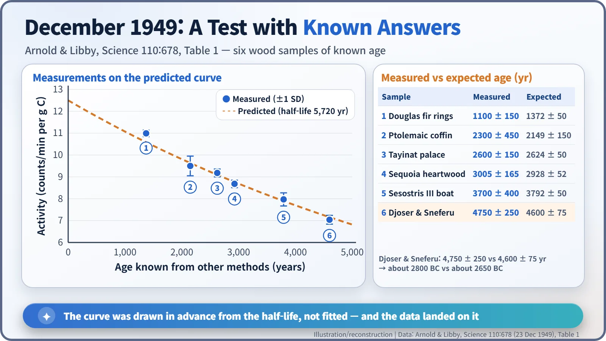
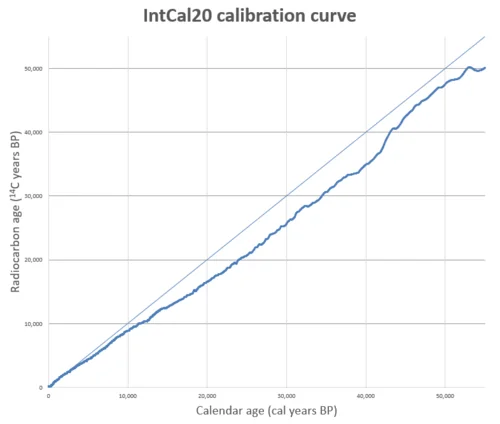

Nuclear History · 196
A Clock That Starts When Life Stops — Willard Libby and Radiocarbon Dating (1949)
A chemist from the Manhattan Project measured the faint radioactivity of carbon-14 in ancient wood, and the steady decay of atomic nuclei became a calendar for human history.
In December 1949, Willard Libby and James Arnold showed that the faint radioactivity of carbon-14 in old wood could tell how long ago a tree had died. Testing the idea first on samples of known age, from tree rings to Egyptian royal tombs, they turned the steady decay of atomic nuclei into a calendar for human history, a peaceful use of nuclear science that won Libby the 1960 Nobel Prize in Chemistry.
A piece of a pharaoh's tomb
A laboratory at the University of Chicago's Institute for Nuclear Studies. A piece of acacia wood from the tomb of the pharaoh Djoser at Saqqara, Egypt, goes into the flame. The wood is roughly 4,600 years old. The carbon dioxide from the burning is collected and turned back into carbon with hot magnesium, and 8 grams of that carbon are spread evenly over the inside wall of a cylindrical counter. Then the waiting begins. The idea is to ask the atoms in the wood itself when the tree was cut down. [1]
This happened in 1949, a little before the "peaceful uses" era of the mid-1950s. It belongs with that story all the same: it is a landmark case of measurement skills from the atomic-bomb years being turned to dating the human past, and its central figure, Willard Libby, went on to serve on the US Atomic Energy Commission (AEC) in exactly that era. [3]

Carbon that falls from the sky
Willard F. Libby (1908–1980) was a chemist with a knack for measuring very weak radioactivity. During the Second World War he worked at Columbia University on uranium enrichment for the Manhattan Project, and in 1945 he moved to Chicago. [3]
He had two clues to work with. In February 1940, Samuel Ruben and Martin Kamen at Berkeley had made carbon-14 in the laboratory and found that its half-life was far longer than anyone expected. Meanwhile Serge A. Korff (1906–1989) had measured how cosmic rays, particles streaming in from space, knock neutrons loose high in the atmosphere: on average about two neutrons per square centimetre of the Earth's surface every second. [2]
Libby joined the dots. When one of those neutrons hits a nitrogen-14 nucleus in the air, it can turn it into carbon-14. The new carbon quickly becomes carbon dioxide and mixes through the atmosphere; plants take it in by photosynthesis and animals by eating plants. So every living thing should carry carbon-14 in the same proportion as the air, which is roughly one carbon-14 atom for every trillion carbon atoms. [4]
The clever part comes after death. Once an organism dies, no fresh carbon comes in, and its carbon-14 slowly turns back into nitrogen-14 by giving off an electron. Every 5,730 years or so, half of what is left disappears. Think of an hourglass that sits on its side for a whole lifetime and is flipped upright at the moment of death.

Sewer gas and a steel tomb
In a 1946 paper Libby put the idea forward and estimated that living carbon should register about 14 radioactive decays per minute per gram. The value later measured by his student E. C. Anderson was about 15.3, a close call for a prediction made on paper. [2]
The trouble was how faint that signal was. In his first counter, background radiation from cosmic rays and other sources was about 400 times stronger than the signal he was looking for. In 1947 the team detected natural carbon-14 in methane from a Baltimore sewage works after enriching it, while methane from petroleum, millions of years old, showed no radioactivity at all. The theory worked, but enrichment was hopelessly expensive: by Libby's account, thousands of dollars to date a single mummy. [2] [4] [7]
So Libby redesigned the instrument. He turned each sample into solid carbon and coated it on the wall of a "screen wall counter", wrapped the counter in iron and lead, and surrounded it with a ring of 11 slim guard counters. A cosmic ray punching in from outside sets off a guard counter and the central counter at the same moment, so any count that arrives together with a guard signal is simply thrown away. This "anticoincidence" trick cut the background to 7.5 counts per minute, about 2 percent of the unshielded level. [1]
Starting with questions that already have answers
Libby and his young colleague James R. Arnold (1923–2012) did not rush to date unknown objects. Advised by a committee of archaeologists and geologists, they first measured wood whose age was already known: a Douglas fir and a giant sequoia dated by tree rings, floor timber from a palace at Tayinat in Syria, a deck board from the funerary boat of the Egyptian king Sesostris III, and wood from the tombs of the kings Djoser and Sneferu. [1]

The results appeared in Science on 23 December 1949. For the two oldest tomb samples, the radiocarbon measurement gave 4,750 ± 250 years, while historians' chronology gave 4,600 ± 75 years: about 2800 BC against about 2650 BC, agreeing within the uncertainty. All six samples followed, within counting statistics, a curve that had been drawn in advance from the half-life alone. That is what made the result so convincing: the curve was a prediction, not a line fitted to the data. [1]

| Sample (1949 test) | Measured age (years) | Expected age (years) |
|---|---|---|
| Douglas fir, tree rings | 1,100 ± 150 | 1,372 ± 50 |
| Ptolemaic-period coffin | 2,300 ± 450 | 2,149 ± 150 |
| Palace floor, Tayinat (Syria) | 2,600 ± 150 | 2,624 ± 50 |
| Sequoia heartwood, tree rings | 3,005 ± 165 | 2,928 ± 52 |
| Funerary boat of Sesostris III | 3,700 ± 400 | 3,792 ± 50 |
| Tombs of Djoser and Sneferu | 4,750 ± 250 | 4,600 ± 75 |
A Nobel Prize, and a sharper clock
The method spread fast. By the time Libby received the 1960 Nobel Prize in Chemistry, "for his method to use carbon-14 for age determination in archaeology, geology, geophysics, and other branches of science", some forty institutions were doing radiocarbon work. At the ceremony, the presenter quoted one of the scientists who had nominated him: "Seldom has a single discovery in chemistry had such an impact on the thinking in so many fields of human endeavour." [4] [3]
From October 1954 to June 1959 Libby served as an AEC commissioner and led work on fallout from nuclear testing. He defended the government's position that the risks of atmospheric testing were small, a stance that drew criticism from parts of the scientific community. [3] [6]
The clock itself was refined. The half-life went from 5,720 years in the 1949 paper to the 5,568 years Libby later adopted, and in 1962 to 5,730 ± 40 years. By convention, though, "radiocarbon ages" are still calculated with 5,568 years. Finer tree-ring measurements also showed that the amount of carbon-14 in the air had varied a little over time, so raw radiocarbon ages are now converted into calendar dates with a calibration curve, currently IntCal20. [2]

The atom shakes its own clock
In an ironic twist, another face of the atom shook the clock. Neutrons from atmospheric nuclear tests also turned nitrogen into carbon-14, and by the mid-1960s the carbon-14 in the air had roughly doubled. Scientists turned this "bomb carbon" into a tracer for following carbon as it moves between air and ocean. In 1977 accelerator mass spectrometry arrived, counting carbon-14 atoms directly and making tiny samples measurable. [2]
The steady, unhurried decay of atomic nuclei had become a calendar for human history. Many of the "about so many thousand years ago" labels in museums today trace back to that cylindrical counter in Chicago.